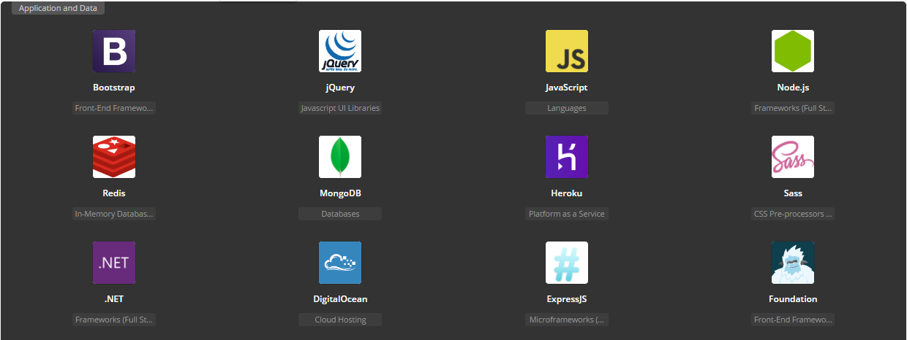

<!--
@license
Copyright (c) 2015 The Polymer Project Authors. All rights reserved.
This code may only be used under the BSD style license found at http://polymer.github.io/LICENSE.txt
The complete set of authors may be found at http://polymer.github.io/AUTHORS.txt

The complete set of contributors may be found at http://polymer.github.io/CONTRIBUTORS.txt
Code distributed by Google as part of the polymer project is also
subject to an additional IP rights grant found at http://polymer.github.io/PATENTS.txt
-->
<link rel="import" href="../../bower_components/paper-fab/paper-fab.html">
<link rel="import" href="../../bower_components/paper-button/paper-button.html">
<dom-module id="deearcodes-about">
  <template>
    <style is="custom-style" include="iron-flex iron-flex-alignment"></style>
    <style is="custom-style" include="iron-flex iron-flex"></style>
    <style include="shared-styles"></style>
    <style>
    :host {
      display: block;
      @apply(--layout-vertical);
      height: 100%;
      width: 80%;
      margin: 0 auto;
    }
    
    p {
      padding: 1em;
      font-size: 1.1rem;
      letter-spacing: -.003em;
      line-height: 1.75;
      margin: 0 auto;
    }
    
    .iframe_container {
      @apply(--layout-flex);
      @apply(--layout-flex-1);
    }
    
    paper-fab {
      position: absolute;
      top: calc(240px - 30px);
      left: 1em;
    }
    
    .meta {
      @apply(--layout-vertical);
      @apply(--layout-center);
    }
    
    .meta > h2,
    h1 {
      text-transform: uppercase;
      margin: 0 0 1rem 0;
    }
    
    iframe {
      @apply(--layout-flex-1);
      width: 100%;
      height: 100%;
      margin: 0 auto;
    }
    
    img {
      width: 100%;
      height: auto;
    }
    
    :host(p) {
      padding: 5em;
    }
    
    #portrait {
      top: -5rem;
      height: 10rem;
      width: 10rem;
      border-radius: 50%;
    }
    
    .known_tech {
      width: 100%;
      margin: 0 auto;
    }
    
    .known_tech > paper-button {
      width: 100%;
      margin: 0;
      text-align: center;
    }
    
    @media (max-width: 600px) {
      iframe {
        width: 100%;
      }
      p {
        font-size: 1rem;
      }
      img #portrait {
        width: 50%;
        height: 50%;
      }
    }
    /* Tablet+ */
    </style>
    <a href="/#/home">
      <paper-fab icon="iron-custom-icons:arrow-back"></paper-fab>
    </a>
    <div class="meta">
      <h1>About me</h1>
      
    </div>
    <article>
      <p>
        Ever since I was a kid creative thinking and immense curiosity has been part of my everyday life. I remember the odd questions I constantly asked my parents. Mom was patient and instructional, always tried to answer to the best of her knowledge. Dad... well, let's say after some 10 questions dad wanted to play the silence game. I'd say I qualified as a "preguntón", which translates to "person that asks... a lot", but that didn't discourage my pursuit for answers about everything.
      </p>
      <p>
        Mid 90's my dad bought the first computer. Back in those days I mainly played minesweeper, but the hook was on.
      </p>
      <quote>As a generation exposed from early childhood to the digital boom, computers and how to effectively use them to our advantage came natural.</quote>
      <p>
        Back when I was 10 years old I considered myself a PC Power User. Although I didn't know programming, tweaking the registry, optimizing and overclocking was a thrilling experience. Coming into early adolescence It was clear to me that computers where my thing. I encountered myself always being the first resort for people that wanted their computers fixed or improved. Building my own setups and more than anything, playing online. Runescape, Warcraft, DotA, Diablo... you name it. Long hours where invested in those games and those I'll never regret. To this day the sense of community, working toward goals and constant improvement are things I practice everyday.
      </p>
      <p>
        As an autodidact I noticed that although the way I was learning fundamentals in software such as algorithms and development methodologies, operating systems and compilers, where great, the lack of dynamism and most of all the conundrum Universities face towards innovation and change due to the constant pressure for compliance with accreditations and of course standardarization of education, my learning rate was beign slowed. Formal education can't keep up with the fast paced rate of Technology. That was an insight I'm very thankful I noticed early on. Thoughout my career I've been able to work in big products, with considerable impact in business, so I'm used to adhere to established code styles and project structures.
      </p>
      <div class="known_tech">
        <p>If you want to check out all the tools I'm familiarized with you can check them out here </p>
        <div id="iframe_container"></div>
        
        <paper-button raised on-tap="expandList">View All</paper-button>
      </div>
    </article>
  </template>
  <script>
  (function() {
    'use strict';
    class DeearcodesAbout {


      beforeRegister() {
        this.is = 'deearcodes-about';
        this.properties = {

        };
      }

      expandList() {
        let techListIframeElement = document.createElement('iframe');
        techListIframeElement.frameBorder = '0';
        techListIframeElement.scrolling = 'auto';
        techListIframeElement.src = 'https://embed.stackshare.io/stacks/embed/951a4d7cd6f00e';
        this.$.iframe_container.appendChild(techListIframeElement);
        this.async(() => {
          this.$.known_tech_img.style.display = 'none';
          this.$.iframe_container.style.height = '250vh';
        }, 1500);
      }


    }

    Polymer(DeearcodesAbout);

  })();
  </script>
</dom-module>
